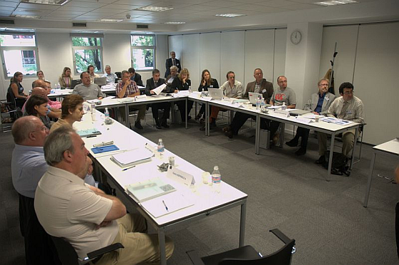

Das zentrale Ergebnis des Stand4All-Projektes war die Entwicklung und Durchführung der Stand4All-Schulungen. Diese Stand4All-Schulungen richteten sich an zwei unterschiedliche Zielgruppen; auf der einen Seite Verbraucher bzw. Konsumenten als Vertreter von Behindertenverbänden und Selbsthilfegruppen und auf der anderen Seite Mitglieder von Normungsausschüssen. Die beiden Kurse sind so aufgebaut, dass die Verbraucher thematisch in das Gebiet Normung eingeführt werden und die Mitglieder der Normungsausschüsse sich mit dem Thema Behinderung auseinander setzen sollen. Ein zentraler Unterrichtsgegenstand behandelt die Verwendung des CEN/CENELEC Leitfaden 6 “Leitlinien für Normungsgremien zur Berücksichtigung der Bedürfnisse von älteren Menschen und von Menschen mit Behinderungen” (Guide 6: Guidelines for standards developers to address the needs of older persons and persons with disabilities). Zu Beginn der Schulung werden beide Gruppen getrennt unterrichtet. Im weiteren Verlauf der Schulung treffen sie sich dann zu einem Rollenspiel.
Während der Laufzeit des Stand4All-Projektes wurden drei Schulungen an barrierefreien Orten in Madrid, in Brüssel und in London durchgeführt. Eine vierte Veranstaltung fand in enger Zusammenarbeit mit dem irischen Normungsinstitut NSAI in Dublin statt. Diese vierte und letzte Veranstaltung war als Testfall gedacht, um zu zeigen, dass die Schulung auch durch Dritte unabhängig von den am Projekt Stand4All beteiligten durchgeführt werden können.
Obwohl das Stand4All-Projekt beendet ist, steht das Schulungsmaterial auch weiterhin zur Verfügung. Handbücher für Trainees stehen auf dieser Webseite zur Verfügung. Das Unterrichtsmaterial wurde auch in ein e-Learning-Kursmodul eingearbeitet. Dieses Kursmodul kann zum Beispiel als Teil einer Schulung oder als Vorbereitung auf eine Schulung verwendet werden. Schließlich besteht bei Interesse, an der Durchführung einer weiteren Stand4All-Schulung, auch noch die Möglichkeit, sich von den Partnerorganisationen des Stand4All-Projektes beraten zu lassen.
